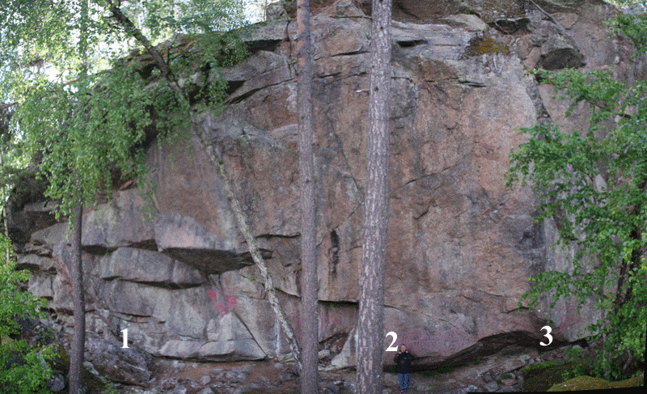
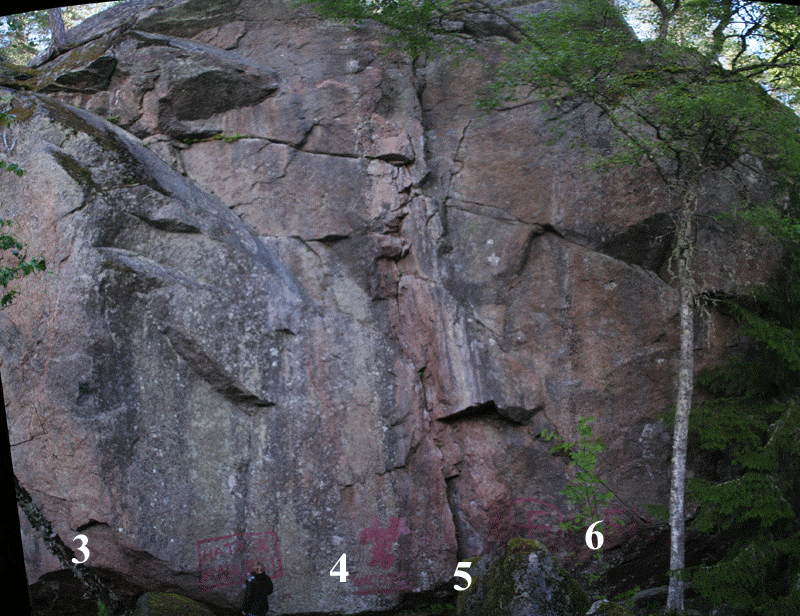
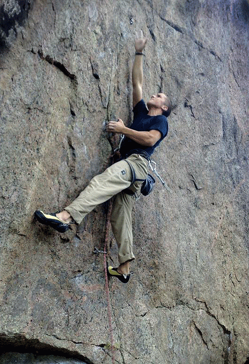

Hemtjärn
Lat: 59.734253
Long: 14.166183
Allmänt
Hemtjärn är en överhängande och ganska regnsäker liten sportklippa utanför Filipstad.
Området består av en vägg med ca 15 meters höjd och 50-100 meters bredd. Ett tiotal leder bjuder på jämn och relativt hård klättring.
Hitta hit
<div style="float: right; margin-left: 10px; padding: 3px; border: solid 1px #cccccc;">
<googlemap version="0.9" lat="59.72837" lon="14.170303" type="map" zoom="11" width="300" height="300">
59.734253, 14.166183, Hemtjärn
</googlemap>
</div>
Från Filipstad kör du väg 246 mot Hagfors. Efter ungefär 2 km är du i Finnshyttan. Där ska du svänga in höger på en liten grusväg som uppenbarar sig efter en rad brevlådor.
Efter 200m uppenbarar sig Hemtjärn och det gamla stationshuset, följ då den gamla banvallen norrut. Efter knappt en kilometer ser du klippan tydligt 10 meter in till vänster. Om du inte vill backa tillbaka bilen kan du bara fortsätta på banvallen och ta första vägen till vänster så kommer du ut på väg 246.
Beskrivning
Vertikala till överhängande leder i 6b-7c+ registret med fokus kring 7b.
Fast och fin klippa som lämpar sig bra för den som är ute efter några hårda men jämna sport-turer.
Knappt 100 meter från parkering och bad.
Klippan har sol fram till kl 12 sommartid.
Klippan hittades i slutet på 90-talet efter tips från Gudmund Söderin som varit där och tränat brandmän i repteknik och räddningsövningar. De som då var aktiva sportklättrare i Karlstads Klätterklubb var snabbt där med borren och flera ankare kom upp. Turer som Icaros och Dynamitharry öppnades av Urban, Martin, Peter, Mattias och Oscar. Fler har tillkommit i nytursskapandet efter det och det finns fortfarande utrymme för ytterligare några hårda sportturer på berget.
2009-2010 fick berget ytterligare bultar och ankare. En del fortfarande projekt (öppna).
Det går ganska enkelt att orientera sig vid den lilla klippan genom att räkna bultrader. Lederna räknas upp från vänster till höger.
Det finns också boulderblock i trakterna runt tjärnet En del bättre än annat. Det mesta oklättrat.
Koordinater 1407724, 6625207.
Leder

- 1
- Den vedervärdiga mannen från Säffle
- 6+ (6b+)
- Leta efter bulten längst till vänster på klippan. Riktigt brant avslutning! Bultad efter 1:a bestigningen. Toppankare, liten kil på mitten och taket kan matas med friends
-
- Projekt 1
- ?
- bultraden direkt till höger om den vedervärdige mannen... Upp över lilla taket/bullen/vinkeln klart intressant move. Toppankare.
-
- Good Coffee is better than Prozac®
- 7b+ (8)
- Bultad maj 2009. Överhängande led till vänster om Unleashed. Förbered dig på underclings-frenesi. Kom nu. Innan du blir för full..." är enligt påstående ngt som muttrats innan bestigning. Toppankare och 7 bultar. Första bulten sällan använd. Crux tidigt, sen lättare.
- 2
- Unleashed
- 7c/7c+ (8+)
- Hårt krux, toppankare
-
- Jesus, din räddning
- 7c (8/8+)
- fin linje bultad aug 2008 till höger om Unleashed. Rolig, sportig och ihållande klättring. Cruxet är ihålligheten om du är lång, catch till gaston(!) om du är kort. Delar toppankare med {{ledlänk|namn=Unleashed}}. Namnet inspirerat från den trubadur-drömmande förstabestigarens semi-religiösa gitarrfodral
- 3
- Kokosnöten
- 7b+ (8)
- Jämn och krimpig. Börjar snett vänster om areten och följer denna mer eller mindre till ankaret

-
- Cyberpunks
- 7a+
- Ser lika tunn ut som den är. 2 bultar vid 3e klippet. Det är den högra du ska använda. Den andra ska knackas bort. Toppankare.
- 4
- Pluttan
- 7b (8-)
- Brant och tunt sva i början, Delar toppankare med Icaros
- 5
- Icaros
- 6c+ (7)
- Uppvärmningsleden. Den tydliga lite brötiga "grooven" i mitten av väggen. Intressant sportig klättring trots utseendet. Ser dessutom lättare ut än vad den är. En variant på mitten efter hyllan är gå ut mot {{ledlänk|namn=dynamitharry}} och gå en liten bit på andra sidan grooven innan man går in i leden igen och klipper sista bultarna. Lite lättare men påverkar inte graden. Toppankare
- 6
- Dynamitharry
- 7b (8-)
- Boulderaktigt insteg och balansigt slut
-
- Hästkanonen
- 8a (9-)
- Ryktet säger att det är hårt. Toppankare.
-
- HSMB
- 6c-7a (7+?)
- Bultraden 10 meter till höger om Dynamitharry. Kort och teknisk har fått graden 6c vid förstabestigningen vilket är något hårt. Lutar kanske mer åt 6c+/7a enligt de handfull personer som bestigit den sedan dess. Förkortningen står för 'Hur Sätter Man Borrbult'. toppankare
-
- The Boy Who Lived
- 6
- Tung hangel och pilliga säkringar, fin led som är värd fler bestigningar än den fått hittils. Börja vid Kondomen och följ sprickan åt vänster förbi ankaret till HSMB och fortsätt upp för rampen ut åt vänster, utsteg vid de små träden. Lightversion slutar i ankaret till HSMB, lika svår men kortare.
-
- Valurauta
- 5-
- Mässings kil i början och en kamsäkring på slutet.

Kategori:Värmland
Kategori:Trad
Kategori:Sport
Kategori:Överhäng
Kategori:Vertikalt
Copyright (C) Permission is granted to copy, distribute and/or modify this document under the terms of the GNU Free Documentation License, Version 1.3